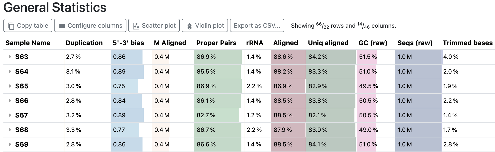
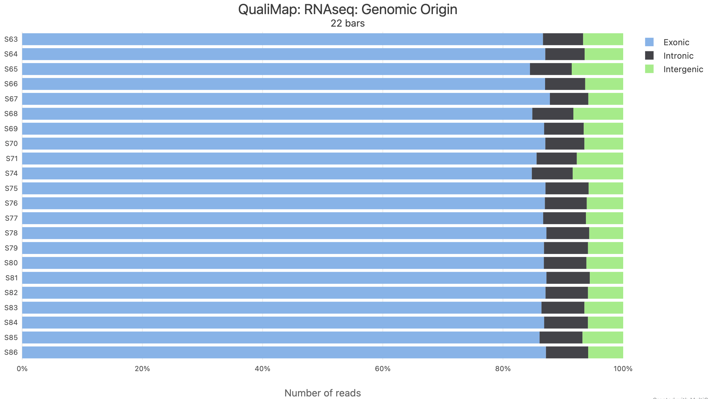
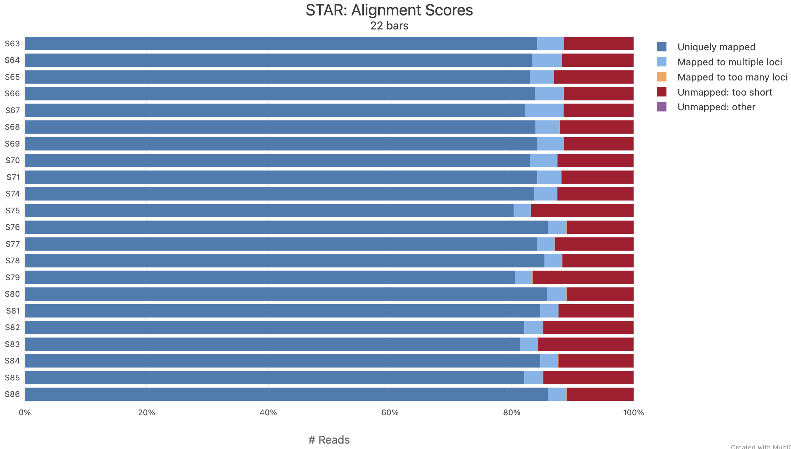
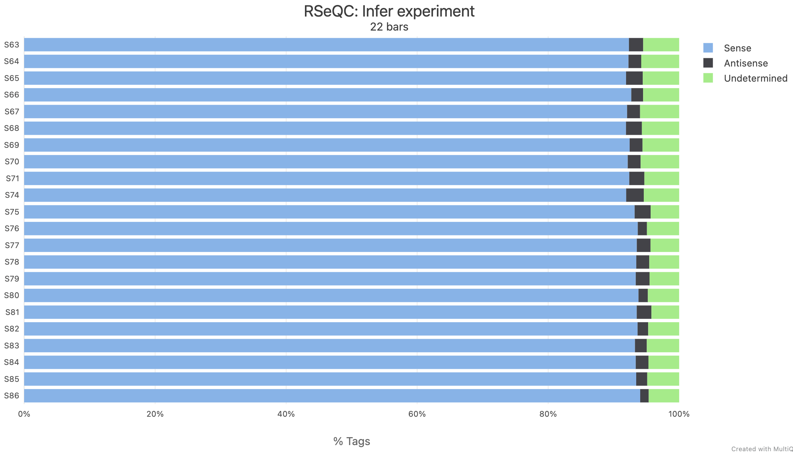
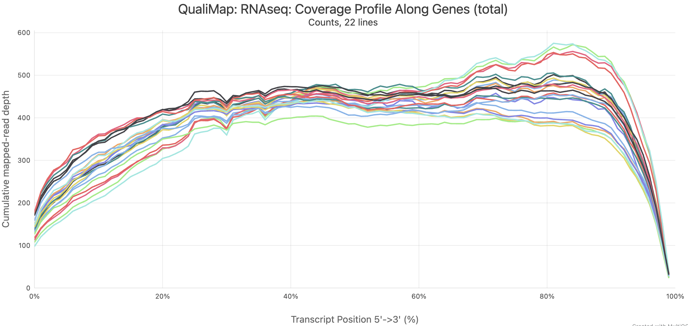
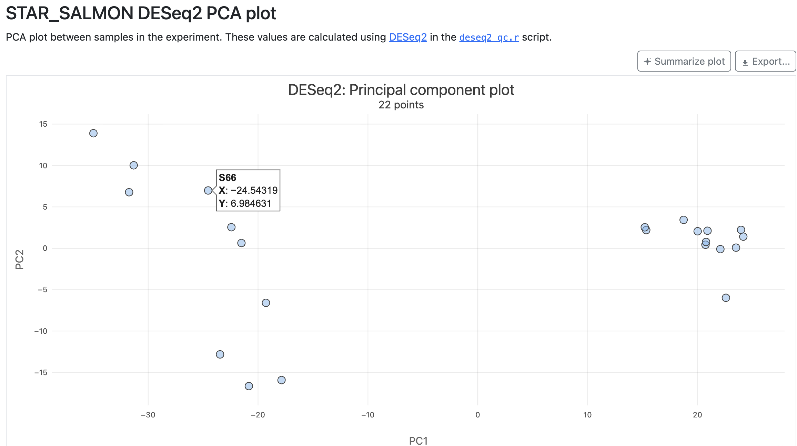

![]()
flowchart LR A["You:<br>sbatch scripts/nfc-rnaseq.sh"] --> B["Main Nextflow job<br>(for the whole pipeline)"] B -->|sbatch| C["TrimGalore job (S63)"] B -->|sbatch| D["STAR job (S63)"] B -->|sbatch| E["... (hundreds more)"]
Running an nf-core Nextflow pipeline – part II
Week 11 – Lecture C
1 Before we get started
In part I, we introduced nf-core pipelines and did a test run of the nf-core rnaseq pipeline. On this page, we will run that pipeline on the Garrigós et al. (2025) RNA-seq data.
1.1 Learning goals
Specifically, you will learn:
- How to prepare the inputs for an nf-core pipeline run, including a sample sheet and reference genome files
- How these pipelines can be run with a single command, while they submit jobs to the Slurm scheduler at OSC
- How to monitor pipeline progress
- How to find and interpret the output files produced by the pipeline
1.2 Getting ready
At https://ondemand.osc.edu, start a VS Code session in
/fs/ess/PAS3493/people/$USER(you won’t need 4 cores this time, since the pipeline will submit jobs to Slurm itself, but if you still have a 4-core session open from part I, that’s fine).In your VS Code terminal, go to your working dir for this week (if you’re continuing from part I, you are probably still in
week11/testrun):cd /fs/ess/PAS3493/people/$USER/week11
2 Preparation for the run
For the pipeline run with the Garrigós et al. (2025) data, we need to start with some prep:
- Download the reference genome assembly.
- Create a “sample sheet” to tell the pipeline about our input FASTQ files.
- Create a small “config file” so Nextflow knows how to submit Slurm batch jobs at OSC.
We will also create a README file to document the run:
touch README.mdOpen the README and paste the following into it (change the name, date, and username), and then run the mkdir command to create dirs for scripts and metadata:
README.md (excerpt)
# RNA-seq analysis of _Culex pipiens_ with the nf-core rnaseq pipeline
- Author: Jane Doe
- Date: 2026-11-02
- This was run at the Ohio Supercomputer Center (OSC),
in the dir `/fs/ess/PAS3493/people/jdoe/week11`
## Running the nf-core rnaseq pipeline on the Garrigos data
- Create dirs for scripts and metadata:
```bash
mkdir scripts metadata
```2.1 Download the reference genome assembly
The garrigos repo contains the reference genome annotation (GTF) file, but not the assembly (FASTA) file. Download the assembly from NCBI with the wget command, like in Lecture A, but this time into garrigos/ref:
README.md (excerpt)
- Download the reference genome assembly:
```bash
URL=https://ftp.ncbi.nlm.nih.gov/genomes/all/GCF/016/801/865/GCF_016801865.2_TS_CPP_V2/GCF_016801865.2_TS_CPP_V2_genomic.fna.gz
wget -P ../garrigos/ref "$URL"
```Run the wget code:
--2026-11-02 14:34:01-- https://ftp.ncbi.nlm.nih.gov/genomes/all/GCF/016/801/865/GCF_016801865.2_TS_CPP_V2/GCF_016801865.2_TS_CPP_V2_genomic.fna.gz
Resolving ftp.ncbi.nlm.nih.gov (ftp.ncbi.nlm.nih.gov)... 130.14.250.31, 130.14.250.7, 2607:f220:41e:250::10, ...
Connecting to ftp.ncbi.nlm.nih.gov (ftp.ncbi.nlm.nih.gov)|130.14.250.31|:443... connected.
HTTP request sent, awaiting response... 200 OK
Length: 172904433 (165M) [application/x-gzip]
Saving to: ‘../garrigos/ref/GCF_016801865.2_TS_CPP_V2_genomic.fna.gz’
GCF_016801865 39%[=======================> ] 65.19M 3.40MB/s eta 41sOnce it has finished downloading (keep an eye on the progress bar), check the contents of the ref dir:
ls -lh ../garrigos/reftotal 170M
-rw-rw----+ 1 jelmer PAS0471 5.1M Sep 14 14:41 annot.gtf.gz
-rw-rw----+ 1 jelmer PAS0471 165M Dec 22 2022 GCF_016801865.2_TS_CPP_V2_genomic.fna.gzBoth files are gzipped (.gz), but there is no need to decompress them: the pipeline will do that for us.
2.2 Create a sample sheet
This pipeline requires a “sample sheet” as one of its inputs. In the sample sheet, you should provide the paths to your FASTQ files and specify the so-called strandedness of your RNA-seq library.
NoteRNA-seq library strandedness (Click to expand)
During RNA-seq library prep, information about the directionality of the original RNA transcripts can be retained (resulting in a “stranded” library) or lost (resulting in an “unstranded” library: specify unstranded in the sample sheet).
In turn, stranded libraries can be prepared either in reverse-stranded (reverse, by far the most common) or forward-stranded (forward) fashion. For more information about library strandedness, see this page.
The pipeline also allows for a fourth option: auto, in which case the strandedness is automatically determined at the start of the pipeline by pseudo-mapping a small proportion of the data with Salmon.
The sample sheet should be a CSV file. Here is the example file from the pipeline’s documentation:
samplesheet.csv (example from the pipeline docs)
sample,fastq_1,fastq_2,strandedness
CONTROL_REP1,AEG588A1_S1_L002_R1_001.fastq.gz,AEG588A1_S1_L002_R2_001.fastq.gz,auto
CONTROL_REP1,AEG588A1_S1_L003_R1_001.fastq.gz,AEG588A1_S1_L003_R2_001.fastq.gz,auto
CONTROL_REP1,AEG588A1_S1_L004_R1_001.fastq.gz,AEG588A1_S1_L004_R2_001.fastq.gz,autoSo, we need a header row with column names, and then one row per pair of FASTQ files1, with columns:
sample: Sample ID (we will simply use the part of the file name shared by R1 and R2)fastq_1: R1 FASTQ file path (including the dir, unless these files are in your working dir)fastq_2: R2 FASTQ file path (idem)strandedness: The library’s strandedness,unstranded,reverse,forward, orauto. This data is forward-stranded, so we’ll useforward2.
You could create this file manually in a text editor, but that would be tedious and error-prone. Instead, we’ll use a for loop that is similar to the loops we used last week to submit a batch job for each sample:
README.md (excerpt)
- Create a samplesheet:
```bash
# Create the file with a header line
echo "sample,fastq_1,fastq_2,strandedness" > metadata/nfc-samplesheet.csv
# Add a row for each sample
for fastq_r1 in ../garrigos/fastq/*_R1.fastq.gz; do
fastq_r2=${fastq_r1/_R1/_R2}
sample_id=$(basename "$fastq_r1" _R1.fastq.gz)
echo "$sample_id,$fastq_r1,$fastq_r2,forward" >> metadata/nfc-samplesheet.csv
done
```- The first
echocommand creates the sample sheet file with the header line. - In the loop, we only loop over the R1 FASTQ files, and infer the name of the corresponding R2 file by replacing
_R1with_R2with parameter expansion: the${var/search/replace}syntax (see week 7). basenameremoves the dir name and the_R1.fastq.gzsuffix from the R1 file path, leaving the sample ID. We store its output in a variable with command substitution,$()(see the optional shell scripting self-study page).- We append (
>>) each row to the sample sheet so that we keep the header line and the rows for previous samples.
What would go wrong if the loop went over all FASTQ files (../garrigos/fastq/*.fastq.gz) instead of only the R1 files?
The sample sheet would have two rows per sample. The rows for the R1 files would be fine, but each R2 file would also get its own row:
- Because the R2 file name doesn’t contain
_R1, the R2 file would be used as bothfastq_1andfastq_2. basenamewouldn’t remove the_R1.fastq.gzsuffix, so the sample ID would be e.g.S63_R2.fastq.gz.
Depending on the pipeline’s sample sheet checks, it would either stop with an error, or (worse) process these rows as extra, bogus samples.
Run the code above and check the contents of your newly created sample sheet file:
# [Run this directly in the terminal, doesn't need to be in the README]
head -n 5 metadata/nfc-samplesheet.csvsample,fastq_1,fastq_2,strandedness
S63,../garrigos/fastq/S63_R1.fastq.gz,../garrigos/fastq/S63_R2.fastq.gz,forward
S64,../garrigos/fastq/S64_R1.fastq.gz,../garrigos/fastq/S64_R2.fastq.gz,forward
S65,../garrigos/fastq/S65_R1.fastq.gz,../garrigos/fastq/S65_R2.fastq.gz,forward
S66,../garrigos/fastq/S66_R1.fastq.gz,../garrigos/fastq/S66_R2.fastq.gz,forward
The sample sheet is in the metadata dir, but contains paths like ../garrigos/fastq/S63_R1.fastq.gz. Relative to which dir do these paths need to be correct?
Relative to the dir from which you run the pipeline (week11), not relative to the sample sheet’s own location: from metadata, ../garrigos would point to week11/garrigos, which doesn’t exist. So, if you ran the pipeline from a different dir, it wouldn’t find the FASTQ files.
2.3 Create a configuration file
One of the strengths of Nextflow/nf-core pipelines is that they can be run on a wide variety of compute infrastructures, from a laptop to HPC clusters and cloud computing. Our test run used the simplest scenario, running everything “locally” on a single node. However, for our real data run, we want to have the pipeline submit Slurm batch jobs so it will efficiently run in parallel across multiple nodes.
To tell the pipeline to submit Slurm batch jobs for us, we will again use a nextflow.config file, like the one you created for the test run. Because Nextflow only automatically reads a nextflow.config file in the dir from which you run it, the file in your testrun dir won’t be used, and we need to create a new one in your week11 dir.
Create the config file, then open it:
touch nextflow.configSince the pipeline has many good default settings for batch jobs, we can keep this config file very simple. Besides the container dir setting from the test run, we’ll set the “executor” to Slurm and specify the OSC project to be used for Slurm job submissions:
nextflow.config
apptainer.cacheDir='/fs/ess/PAS3493/share/nxf-containers' process.executor='slurm' process.clusterOptions='--account=PAS3493'
3 Write a shell script to run the pipeline
As mentioned in part I, for this larger pipeline run, we will also submit the nextflow run command itself as a Slurm batch job via a shell script. So, there are two “layers” of batch jobs: the main Nextflow process, for which we submit a batch job ourselves, and the jobs that this process submits for each step and sample:
Let’s go through the key parts of this shell script.
3.1 Processing arguments passed to the script
As we’ve often done with shell scripts to run bioinformatics tools, we’ll keep the shell script flexible by having it accept arguments that represent the inputs and outputs of the pipeline:
- Input 1: The sample sheet
- Input 2: The FASTA reference genome assembly file
- Input 3: The GTF reference genome annotation file
- Output 1: The desired output dir for the final pipeline output
- Output 2: The desired Nextflow “work dir” for all job outputs, including intermediate files
scripts/nfc-rnaseq.sh (excerpt)
# Copy the placeholder variables
samplesheet=$1
fasta=$2
gtf=$3
outdir=$4
workdir=$5When building the command below, we’ll use these variables to refer to the input/output paths.
3.2 Writing the nextflow run command
Here is the part of the command that includes general Nextflow options:
scripts/nfc-rnaseq.sh (excerpt)
nextflow run nf-core/rnaseq \
-r 3.26.0 \
-profile apptainer \
-resume \
-work-dir "$workdir" \
-ansi-log false \- Like in the test run, our command starts with
nextflow runfollowed by the pipeline name and version. - The
-profilewill now simply beapptainer(i.e. omittingtest). - It’s a good idea to always include the
-resumeoption3. - We set the
-work-dirto a dir within our project’s Scratch dir (/fs/scratch), which is well suited for the many large intermediate files in the work dir due to its fast I/O and ample storage space. - The
-ansi-log falseoption changes the logging format to a basic format that works better in Slurm log files4.
Next, we’ll add the pipeline-specific options, starting with several required options (see the pipeline’s documentation), which represent the inputs and outputs discussed above — the paths to:
--input: the “sample sheet”--fasta: the reference genome assembly FASTA file--gtf: the reference genome annotation GTF file--outdir: the output dir
scripts/nfc-rnaseq.sh (excerpt)
nextflow run nf-core/rnaseq \
-r 3.26.0 \
-profile apptainer \
-resume \
-work-dir "$workdir" \
-ansi-log false \
--input "$samplesheet" \
--fasta "$fasta" \
--gtf "$gtf" \
--outdir "$outdir"Finally, we will change two pipeline-specific options from their defaults. First, we need to change one setting to make the pipeline work with our GTF file (--featurecounts_group_type transcript_biotype). Second, we want to remove reads that originate from ribosomal RNA, and you’ll find the right option for that in the self-study exercise below.
Self-study exercise: Find the right pipeline option
Take a look at the “Parameters” tab on the pipeline’s documentation website:
Browse through the options for a bit to get a feel for the extent to which you can customize the pipeline.
Find the option to remove reads that originate from ribosomal RNA (rRNA).
Click for the solution
The option to remove rRNA is
--remove_ribo_rna.Say you had forgotten this option, and your pipeline run had already finished. If you add the option and resubmit the script (which uses
-resume), what would be rerun?- Only the rRNA removal step (SortMeRNA)
- SortMeRNA, plus the steps that process its output, like STAR and Salmon
- The entire pipeline, since a setting changed
Click for the solution
B. Steps that come before rRNA removal, like read trimming, and steps that don’t use the reads, like preparing the reference genome, would be cached, since their inputs and settings didn’t change. But STAR now receives different (rRNA-filtered) reads as input, so it would be rerun, and so would every step that uses its outputs.
NoteMore about the GTF setting (Click to expand)
One of the pipeline’s QC steps summarizes from which types of genes (“biotypes”) the reads originate, such as protein-coding genes, long non-coding RNAs, and rRNA genes. By default, the pipeline looks for this information in a gene_biotype field on the exon lines of the GTF file. But our GTF file, which comes from NCBI, only has that field on its gene lines, and calls it transcript_biotype on its exon lines — so with the default setting, the pipeline would stop with an error. To make it use the transcript_biotype field instead, we will add --featurecounts_group_type transcript_biotype.
TipWhat would happen if you made a typo in a pipeline-specific option?
For example, what would happen if you used --remove_ribo_rnaa instead of --remove_ribo_rna?
The pipeline would run anyway, but without removing rRNA! nf-core pipelines only print a warning about unrecognized parameters near the top of the log, and then ignore them. (A typo in a general Nextflow option, like -resum, is different: Nextflow will refuse to start and report an unknown option.) So, always check the warnings and the parameter summary at the top of the log.
3.3 The final script
Now, we’re ready to create the full shell script.
touch scripts/nfc-rnaseq.sh
# Then open the newly created script in the VS Code editorPaste the following code into the script — this contains the discussed command and variables, as well as:
- The “standard shell” script header lines we’ve been using
#SBATCHoptions for the main Nextflow process. We ask for 12 hours mostly because the resource requests for the jobs that Nextflow submits are rather large by default, such that these jobs may be queued for substantial amounts of time (without queueing time, the pipeline would finish in well under an hour). We also ask for 8 GB of memory, since the default 4 GB is not always enough for the main Nextflow process.- Some
echoreporting of arguments/variables, printing the date, etc.
scripts/nfc-rnaseq.sh
#!/bin/bash
#SBATCH --account=PAS3493
#SBATCH --time=12:00:00
#SBATCH --mem=8G
#SBATCH --mail-type=END,FAIL
#SBATCH --output=slurm-nfc-rnaseq-%j.out
set -euo pipefail
# Run the nf-core/rnaseq pipeline
# Usage: sbatch scripts/nfc-rnaseq.sh <sample sheet> <FASTA> <GTF> <output dir> <work dir>
# Load the Nextflow module
module load nextflow/25.04.6
# Copy the placeholder variables
samplesheet=$1
fasta=$2
gtf=$3
outdir=$4
workdir=$5
# Initial logging
echo "Starting script nfc-rnaseq.sh"
date
echo "Samplesheet: $samplesheet"
echo "Reference FASTA: $fasta"
echo "Reference GTF: $gtf"
echo "Output dir: $outdir"
echo "Nextflow work dir: $workdir"
echo
# Create the output dirs
mkdir -p "$outdir" "$workdir"
# Run the workflow
nextflow run nf-core/rnaseq \
-r 3.26.0 \
-profile apptainer \
-resume \
-work-dir "$workdir" \
-ansi-log false \
--input "$samplesheet" \
--fasta "$fasta" \
--gtf "$gtf" \
--outdir "$outdir" \
--remove_ribo_rna \
--featurecounts_group_type transcript_biotype
# Final logging
echo
echo "Successfully finished script nfc-rnaseq.sh"
date
The pipeline runs tools like STAR that need many cores and lots of memory. So why is it fine that this script only asks for 1 core and 8 GB?
The #SBATCH options are only for the “main” Nextflow process, which merely orchestrates the pipeline and submits jobs. The jobs that Nextflow submits for each step have their own resource requests, which the pipeline sets for each step (you could change these in your nextflow.config file, but we won’t do that here).
TipSettings to change when running your own nf-core pipelines (Click to expand)
If you run Nextflow/nf-core pipelines for your final project or your own research, don’t simply copy all the settings we used here:
The container dir. You can’t write to the shared container dir
/fs/ess/PAS3493/share/nxf-containers, and it only contains the containers for the pipeline version we use in class. If you run a different pipeline or pipeline version with this setting, Nextflow can’t download the containers it needs, and your run will fail. Instead, setapptainer.cacheDirto a dir you can write to, e.g.:nextflow.config (excerpt)
apptainer.cacheDir='/fs/ess/<your-project>/containers'(If you remove the
apptainer.cacheDirline altogether, Nextflow will store the containers inside the work dir. That works too, but using a single dedicated dir is better, because containers take up several GBs and can be reused across runs and pipelines.)The OSC project. When running pipelines for your own research, replace
PAS3493with your own OSC project, both inprocess.clusterOptionsin yournextflow.configfile and in the#SBATCH --accountline of your script. Also update the/fs/ess/PAS3493and/fs/scratch/PAS3493paths, such as for the work dir.The Nextflow and pipeline versions. Consider using the newer Nextflow module and the latest version of the pipeline.
4 Run the pipeline
Now that the shell script is ready, you can finally run the pipeline on the Garrigós et al. (2025) data!
4.1 Define variables to pass to the shell script
First, define variables with the arguments needed to run the script:
README.md (excerpt)
- Define the pipeline inputs and outputs:
```bash
# Inputs
samplesheet=metadata/nfc-samplesheet.csv
fasta=../garrigos/ref/GCF_016801865.2_TS_CPP_V2_genomic.fna.gz
gtf=../garrigos/ref/annot.gtf.gz
# Outputs
outdir=results/nfc-rnaseq
workdir=/fs/scratch/PAS3493/$USER/week11/nfc-rnaseq-work
```Run the above lines in your terminal, then check that the input files are present at the specified paths:
ls -lh "$samplesheet" "$fasta" "$gtf"-rw-rw----+ 1 jelmer PAS0471 5.1M Sep 14 14:41 ../garrigos/ref/annot.gtf.gz
-rw-rw----+ 1 jelmer PAS0471 165M Dec 22 2022 ../garrigos/ref/GCF_016801865.2_TS_CPP_V2_genomic.fna.gz
-rw-rw----+ 1 jelmer PAS0471 2.5K Nov 2 14:39 metadata/nfc-samplesheet.csv4.2 Submit your shell script
Finally, add the code to submit the shell script into the README.md file, and run it:
README.md (excerpt)
- Submit the script to run the pipeline as a batch job:
```bash
sbatch scripts/nfc-rnaseq.sh "$samplesheet" "$fasta" "$gtf" "$outdir" "$workdir"
```Submitted batch job 42175708
Click to see the full README.md as intended
README.md (full)
# RNA-seq analysis of _Culex pipiens_ with the nf-core rnaseq pipeline
- Author: Jane Doe
- Date: 2026-11-02
- This was run at the Ohio Supercomputer Center (OSC),
in the dir `/fs/ess/PAS3493/people/jdoe/week11`
## Running the nf-core rnaseq pipeline on the Garrigos data
- Create dirs for scripts and metadata:
```bash
mkdir scripts metadata
```
- Download the reference genome assembly:
```bash
URL=https://ftp.ncbi.nlm.nih.gov/genomes/all/GCF/016/801/865/GCF_016801865.2_TS_CPP_V2/GCF_016801865.2_TS_CPP_V2_genomic.fna.gz
wget -P ../garrigos/ref "$URL"
```
- Create a samplesheet:
```bash
# Create the file with a header line
echo "sample,fastq_1,fastq_2,strandedness" > metadata/nfc-samplesheet.csv
# Add a row for each sample
for fastq_r1 in ../garrigos/fastq/*_R1.fastq.gz; do
fastq_r2=${fastq_r1/_R1/_R2}
sample_id=$(basename "$fastq_r1" _R1.fastq.gz)
echo "$sample_id,$fastq_r1,$fastq_r2,forward" >> metadata/nfc-samplesheet.csv
done
```
- Define the pipeline inputs and outputs:
```bash
# Inputs
samplesheet=metadata/nfc-samplesheet.csv
fasta=../garrigos/ref/GCF_016801865.2_TS_CPP_V2_genomic.fna.gz
gtf=../garrigos/ref/annot.gtf.gz
# Outputs
outdir=results/nfc-rnaseq
workdir=/fs/scratch/PAS3493/$USER/week11/nfc-rnaseq-work
```
- Submit the script to run the pipeline as a batch job:
```bash
sbatch scripts/nfc-rnaseq.sh "$samplesheet" "$fasta" "$gtf" "$outdir" "$workdir"
```
4.3 Check the pipeline’s progress
Let’s check whether your job has started running, and if so, whether Nextflow has already spawned jobs:
# [Run this directly in the terminal]
squeue -u $USER -lMon Nov 2 14:45:15 2026
JOBID PARTITION NAME USER STATE TIME TIME_LIMI NODES NODELIST(REASON)
42175708 cpu nfc-rnas jelmer RUNNING 0:23 12:00:00 1 p0222In the example output above, the only running job is the one we directly submitted, i.e. the main Nextflow process. If you try squeue again later, you should see Nextflow-submitted jobs — below, all the jobs with (partial) name nf-NFCOR are jobs submitted by Nextflow:
squeue -u $USER -lMon Nov 2 14:46:39 2026
JOBID PARTITION NAME USER STATE TIME TIME_LIMI NODES NODELIST(REASON)
42175726 cpu nf-NFCOR jelmer RUNNING 0:01 4:00:00 1 p0095
42175727 cpu nf-NFCOR jelmer RUNNING 0:01 4:00:00 1 p0080
42175728 cpu nf-NFCOR jelmer RUNNING 0:01 4:00:00 1 p0080
42175729 cpu nf-NFCOR jelmer RUNNING 0:01 4:00:00 1 p0078
42175730 cpu nf-NFCOR jelmer RUNNING 0:01 4:00:00 1 p0078
42175731 cpu nf-NFCOR jelmer RUNNING 0:01 4:00:00 1 p0078
42175732 cpu nf-NFCOR jelmer RUNNING 0:01 4:00:00 1 p0078
42175711 cpu nf-NFCOR jelmer RUNNING 0:01 4:00:00 1 p0098
42175712 cpu nf-NFCOR jelmer RUNNING 0:01 4:00:00 1 p0099
42175708 cpu nfc-rnas jelmer RUNNING 1:26 12:00:00 1 p0222
TipHow to see the full names of jobs with long names (Click to expand)
Unfortunately, the columns in the output above are quite narrow, so it’s not possible to see which step of the pipeline is being run by that job. The following (awful-looking!) code can be used to make that column much wider, so you can see the jobs’ full names, which makes clear which steps are being run:
# (The '%.100j' makes the NAME column 100 characters wide)
squeue -u $USER --format="%.9i %.9P %.100j %.8T %.10M %.10l %.4C %R %.16V" JOBID PARTITION NAME STATE TIME TIME_LIMIT CPUS NODELIST(REASON) SUBMIT_TIME
42175824 cpu nf-NFCORE_RNASEQ_RNASEQ_FASTQ_QC_TRIM_FILTER_SETSTRANDEDNESS_SORTMERNA_(S79) RUNNING 0:53 16:00:00 17 p0111 2026-11-02T14:49
42175825 cpu nf-NFCORE_RNASEQ_RNASEQ_FASTQ_QC_TRIM_FILTER_SETSTRANDEDNESS_SORTMERNA_(S80) RUNNING 0:53 16:00:00 17 p0116 2026-11-02T14:49
42175826 cpu nf-NFCORE_RNASEQ_RNASEQ_FASTQ_QC_TRIM_FILTER_SETSTRANDEDNESS_SORTMERNA_(S83) RUNNING 0:53 16:00:00 17 p0121 2026-11-02T14:49
42175827 cpu nf-NFCORE_RNASEQ_RNASEQ_FASTQ_QC_TRIM_FILTER_SETSTRANDEDNESS_SORTMERNA_(S85) RUNNING 0:53 16:00:00 17 p0122 2026-11-02T14:49
42175780 cpu nf-NFCORE_RNASEQ_PREPARE_GENOME_STAR_GENOMEGENERATE_(GCF_016801865.2_TS_CPP_V2_genomic.fna) RUNNING 3:19 16:00:00 17 p0116 2026-11-02T14:46
42175708 cpu nfc-rnaseq.sh RUNNING 5:19 12:00:00 1 p0222 2026-11-02T14:44See the self-study page on Slurm for an explanation of this command, and for how to make an alias for it so you don’t have to type it out.
You can also keep an eye on the pipeline’s progress, and see if there are any errors, by checking the Slurm log file:
# (We need the -R option to 'less' to display colors properly)
less -R slurm-nfc-rnaseq*Starting script nfc-rnaseq.sh
Mon Nov 02 02:45:14 PM EST 2026
Samplesheet: metadata/nfc-samplesheet.csv
Reference FASTA: ../garrigos/ref/GCF_016801865.2_TS_CPP_V2_genomic.fna.gz
Reference GTF: ../garrigos/ref/annot.gtf.gz
Output dir: results/nfc-rnaseq
Nextflow work dir: /fs/scratch/PAS3493/jelmer/week11/nfc-rnaseq-work
Nextflow 26.10.3 is available - Please consider updating your version to it
N E X T F L O W ~ version 25.04.6
WARN: It appears you have never run this project before -- Option `-resume` is ignored
Launching `https://github.com/nf-core/rnaseq` [jolly_rosalind] DSL2 - revision: e7ca46272c [3.26.0]
------------------------------------------------------
,--./,-.
___ __ __ __ ___ /,-._.--~'
|\ | |__ __ / ` / \ |__) |__ } {
| \| | \__, \__/ | \ |___ \`-._,-`-,
`._,._,'
nf-core/rnaseq 3.26.0
------------------------------------------------------
Input/output options
input : metadata/nfc-samplesheet.csv
outdir : results/nfc-rnaseq
Reference genome options
fasta : ../garrigos/ref/GCF_016801865.2_TS_CPP_V2_genomic.fna.gz
gtf : ../garrigos/ref/annot.gtf.gz
Read filtering options
remove_ribo_rna : true
# [...output truncated...]In the Slurm log file, pipeline progress is shown in the following way — unfortunately, with -ansi-log false, you can only see when jobs are being submitted, not when they finish5.
[db/8d917a] Submitted process > NFCORE_RNASEQ:RNASEQ:FASTQ_QC_TRIM_FILTER_SETSTRANDEDNESS:FQ_LINT (S64)
[ae/791260] Submitted process > NFCORE_RNASEQ:PREPARE_GENOME:GUNZIP_GTF (annot.gtf.gz)
[42/13e8fc] Submitted process > NFCORE_RNASEQ:PREPARE_GENOME:GUNZIP_FASTA (GCF_016801865.2_TS_CPP_V2_genomic.fna.gz)
[09/da295d] Submitted process > NFCORE_RNASEQ:RNASEQ:FASTQ_QC_TRIM_FILTER_SETSTRANDEDNESS:FQ_LINT (S63)
[f5/4dd5d9] Submitted process > NFCORE_RNASEQ:RNASEQ:FASTQ_QC_TRIM_FILTER_SETSTRANDEDNESS:FQ_LINT (S65)
[99/247b8f] Submitted process > NFCORE_RNASEQ:RNASEQ:FASTQ_QC_TRIM_FILTER_SETSTRANDEDNESS:FQ_LINT (S66)
[b5/a76208] Submitted process > NFCORE_RNASEQ:RNASEQ:FASTQ_QC_TRIM_FILTER_SETSTRANDEDNESS:FQ_LINT (S67)
[ce/f3c2c7] Submitted process > NFCORE_RNASEQ:RNASEQ:FASTQ_QC_TRIM_FILTER_SETSTRANDEDNESS:FQ_LINT (S68)
NoteYou should also see the following warning among the job submissions (Click to expand)
This warning appears to be related to a small bug in the pipeline code that should not affect the results:
WARN: The operator `first` is useless when applied to a value channel which returns a single value by definitionIf any errors occur, they are reported in this file. When a job fails because it ran out of memory or time, the pipeline will by default retry it once, with increased resource requests. Other errors, e.g. due to a problem with your input files, will make the pipeline stop, and you will have to investigate the problem.
Your pipeline run may finish in as little as 15–30 minutes with our small dataset, but this can vary substantially due to variation in Slurm queue times. When the pipeline has finished, pay attention to the message printed at the end of the log file — in the example below, the pipeline finished successfully:
[ca/b7b202] Submitted process > NFCORE_RNASEQ:RNASEQ:BEDGRAPH_BEDCLIP_BEDGRAPHTOBIGWIG_REVERSE:UCSC_BEDGRAPHTOBIGWIG (S79)
[86/67dd0a] Submitted process > NFCORE_RNASEQ:RNASEQ:BEDGRAPH_BEDCLIP_BEDGRAPHTOBIGWIG_FORWARD:UCSC_BEDGRAPHTOBIGWIG (S64)
-[nf-core/rnaseq] Pipeline completed successfully -
Successfully finished script nfc-rnaseq.sh
Mon Nov 02 02:57:49 PM EST 2026
NoteIf your pipeline run fails (Click to expand)
When a job fails and the pipeline stops, the end of the Slurm log file will show an error message like this one:
ERROR ~ Error executing process > 'NFCORE_RNASEQ:RNASEQ:ALIGN_STAR:STAR_ALIGN (S63)'
Caused by:
Process `NFCORE_RNASEQ:RNASEQ:ALIGN_STAR:STAR_ALIGN (S63)` terminated with an error exit status (1)
Command executed:
# [...]
Command exit status:
1
Command error:
# [...the last lines of the job's standard error...]
Work dir:
/fs/scratch/PAS3493/jelmer/week11/nfc-rnaseq-work/3f/a71c2e[...]To troubleshoot:
- Read the
Command errorsection, which shows the last lines of what the failed job printed to standard error. - If that isn’t enough, go to the job’s
Work dir, and check the.command.errand.command.logfiles there (and.command.sh, to see the exact command that was run). - Some errors occur before any job is run, e.g. a typo in a general Nextflow option or a missing input file. Those are shown in the Slurm log file too, with more details in the hidden file
.nextflow.login the dir from which you ran the pipeline.
After fixing the problem, submit the script again with the exact same sbatch command: because the script uses -resume, the pipeline will pick up where it left off.
5 The pipeline’s outputs
5.1 Overview
Once the pipeline run has finished, take a look at the files and dirs in the specified output dir (if your run hasn’t finished yet, look at the outputs of my run in /fs/ess/PAS3493/share/week11/nfc-rnaseq instead):
ls -lh results/nfc-rnaseqtotal 19K
drwxrwx---+ 4 jelmer PAS0471 4.0K Nov 2 14:47 fastqc
drwxrwx---+ 4 jelmer PAS0471 4.0K Nov 2 14:47 fq_lint
drwxrwx---+ 3 jelmer PAS0471 4.0K Nov 2 14:57 multiqc
drwxrwx---+ 2 jelmer PAS0471 4.0K Nov 2 14:57 pipeline_info
drwxrwx---+ 2 jelmer PAS0471 4.0K Nov 2 14:51 sortmerna
drwxrwx---+ 33 jelmer PAS0471 16K Nov 2 14:55 star_salmon
drwxrwx---+ 2 jelmer PAS0471 4.0K Nov 2 14:47 trimgaloreThis looks much like the output of the test run in part I, except that there is now a sortmerna dir because we removed rRNA, and that there are no bbsplit and salmon dirs, since those steps were only part of the test run.
Like in the test run, the two most important outputs are:
- The MultiQC report (
multiqc/star_salmon/multiqc_report.html), which we’ll take a closer look at below. - The gene count table (
star_salmon/salmon.merged.gene_counts_length_scaled.tsv), which you’ll use for differential expression analysis in week 15!
5.2 The MultiQC report
Open the MultiQC report like we’ve done with other HTML files: download the file (find it in the VS Code file browser on the left, right-click on it, and select Download...) and then open it on your own computer (alternatively, open the copy of the MultiQC report on this website). There’s a lot of information in the report, so we’ll just highlight a few things here.
The General Statistics table (the first section) is useful — some notes:
- Most of the table’s content is also present in later graphs, but the table allows for comparisons across metrics.
- The
%rRNA(% of reads identified as rRNA and removed by SortMeRNA) can only be found in this table. - Many columns are shown, and it can be useful to subset the table. In particular, it’s best to hide the columns with statistics from Samtools, which can be confusing if not downright misleading6: Click “Configure Columns” and uncheck all boxes for stats with Samtools in their name.

The General Statistics table after selecting only a subset of columns
The Qualimap > Genomic origin of reads plot shows, for each sample, the proportion of reads mapping to exonic vs. intronic vs. intergenic regions. This is an important QC plot: the vast majority of your reads should be exonic7.

This is a good result, with 80-90% of mapped reads in exonic regions.
The STAR > Alignment Scores plot shows, for each sample, the percentage of reads that were mapped. Note that “Mapped to multiple loci” reads are also included in the final counts, and that “Unmapped: too short” really means unmapped rather than that the reads were too short8.

This is a pretty good result, with 80-90% of reads mapped.
The RSeQC > Infer experiment plot shows the library strandedness. If your library is:
- Unstranded, there should be similar percentages of Sense and Antisense reads.
- Forward-stranded, the vast majority of reads should be Sense.
- Reverse-stranded, the vast majority of reads should be Antisense.

This library is clearly forward-stranded, as we indicated in our sample sheet.
You don’t have to check this by eye, though: the Sample Status section at the top of the report has a table that compares the strandedness you specified in the sample sheet with the strandedness that the pipeline inferred from the alignments, and flags any samples for which these don’t match.
Finally, the section nf-core/rnaseq Software Versions way at the bottom lists the versions of all programs used by the pipeline!
TipTwo more plots from the MultiQC report (Click to expand)
The Qualimap > Gene Coverage Profile plot shows average read-depth across the length of genes/transcripts (averaged across all genes), which helps to assess the amount of RNA degradation. For poly-A selected libraries, RNA molecules “begin” at the 3’ end (right-hand side of the graph), so the more degradation there is, the more you expect a higher read-depth towards the 3’ end relative to that at the 5’ end.

Here, the read depth at ~20% (near the 5’ end) is clearly lower than at ~80% (near the 3’ end), indicating some RNA degradation. Note that the sharp decreases at the very end on each side are expected and do not indicate RNA degradation.
The STAR_SALMON DESeq2 PCA plot is from a Principal Component Analysis (PCA) run on the final gene count table, showing overall patterns of gene expression similarity among samples.

The samples form two distinct groups along PC1.
6 Recap
In this lecture and part I, you have learned how to run an nf-core pipeline at OSC:
- Do a test run first, with
-profile test, to check your setup - Prepare the inputs: a sample sheet with your FASTQ files, and reference genome files
- Use a
nextflow.configfile to make Nextflow submit Slurm batch jobs - Submit the main Nextflow process as a batch job itself, via a shell script
- Use a scratch dir as the work dir, and keep it until you’re done with the run
- Rerun with
-resumeafter failures or changes, so that only affected steps are rerun - Find the key outputs: the MultiQC report and the gene count table
References
Garrigós, Marta, Guillem Ylla, Josué Martínez-de la Puente, Jordi Figuerola, and María José Ruiz-López. 2025. “Two Avian Plasmodium Species Trigger Different Transcriptional Responses on Their Vector Culex pipiens.” Molecular Ecology 34 (15): e17240. https://doi.org/10.1111/mec.17240.
Footnotes
In the example above, sample
CONTROL_REP1was sequenced on three lanes, so it has three rows, which the pipeline will merge. We have one pair of FASTQ files per sample, so we’ll have one row per sample.↩︎If you have your own RNA-seq data, whoever did the library prep should know what the strandedness is. If you really don’t know, use
autoto let the pipeline figure it out.↩︎It doesn’t do anything when we run the pipeline for the first time (Nextflow will even print a warning about this, which you can ignore). But if the run fails or we change a setting, we can simply resubmit the same script, and the pipeline will pick up where it left off.↩︎
In this format, there is a separate line for each job rather than grouping jobs by process.↩︎
But without this option, the output would be very messy in a Slurm log file.↩︎
E.g., they count alignments rather than reads, so reads that map to multiple places are counted several times.↩︎
A lot of intronic content may indicate that you have a lot of pre-mRNA in your data; this is more common when your library prep used rRNA depletion instead of poly-A selection. A lot of intergenic content may indicate DNA contamination. Poor genome annotation quality may also contribute to a low percentage of exonic reads. The RSeQC > Read Distribution plot will show this with even more categories, e.g. separately showing UTRs.↩︎
It says “too short” because the aligned part of the read was too short.↩︎